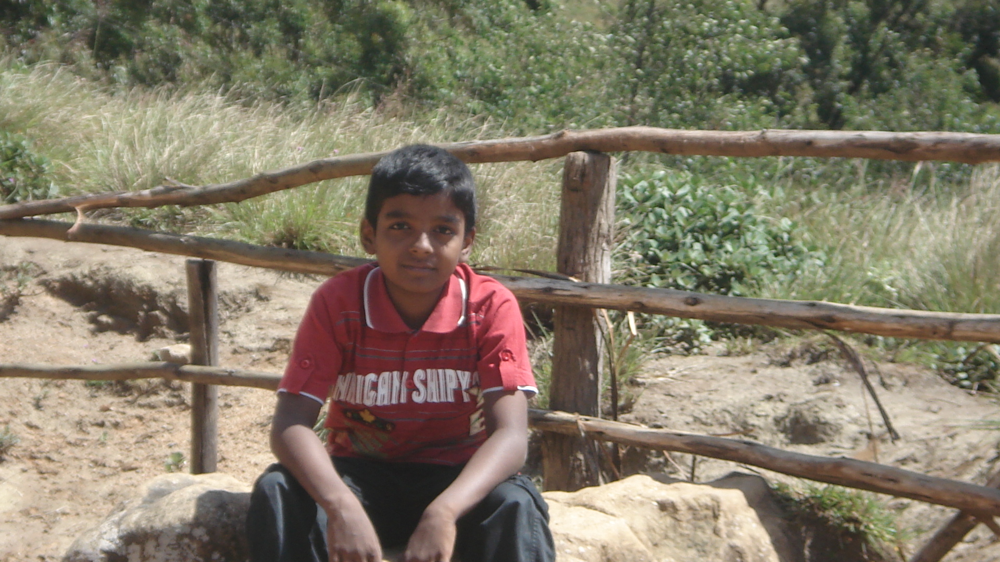

<!DOCTYPE html>
<html lang="en"></html>
<html>
    <head>
        <meta charset="UTF-8">
        <meta name="viewport" content="width=device-width,initial-scale=1.0">
        <title>Media Query</title>
        <link rel="stylesheet" href="style.css">
    </head>
    <body>
          <div>
            <header>
                <button>Home</button>
                <button>About</button>
                <button>Contact</button>
            </header>
            <main>
                <div>
                   
                </div>
                <div>
                    <p>Myself Fabian Raja Fernando and Im 21. I have completed Computer Science Engineering in Sathyabama Institute of Science and Technology and I have an Overall CGPA of 7.95. I have successfully completed 3 projects during my academics.
                    <br>
                        1. Breast Cancer Prediction using ML<br>
                        2. Movie Ticket Booking Application using ReactJS<br>
                        3. Disease Prediction using ML<br>
                    
                    Certifications:<br>
                    
                        1. MERN STACK from GUVI<br>
                        2. CORE JAVA from Green Technologies<br>
                        3. APP DEVELOPER from Zoho<br>
                        1. Breast Cancer Prediction using ML<br>
                        2. Movie Ticket Booking Application using ReactJS<br>
                        3. Disease Prediction using ML<br>
                    
                    Certifications:<br>
                    
                        1. MERN STACK from GUVI<br>
                        2. CORE JAVA from Green Technologies<br>
                        3. APP DEVELOPER from Zoho<br>
                    
                    
                </div>
            </main>
          </div>
    </body>
</html>